CostGuard ledger
How do products show committed work with owners and statuses, put projected against realized, admit that finished work came undone, and treat an empty list as a success?
12 references from Mobbin · web · 2026-09-06 · brief: docs/prd/costguard-follow-through.md
Finding the waste is solved. Proving it was saved is not.
And our own data holds the sharper case: Snowflake weekend cost ran at 40% of weekday until 6 June, then returned to 100%. $5,596 across 24 weekend days — ≈$2,075/month, still running, and no anomaly fired.
Three bands — and the category was the weakest of them
| Band | Who | Why |
|---|---|---|
| Direct | AWS, Snowflake | What a FinOps buyer already expects |
| Indirect | 7shifts, Xero, Clay | Products that live on projected vs. actual, and on who owns a line |
| Aspirational | Supabase, Linear, Jira, ClickUp, Twenty | Issue tooling, where accountability was solved a decade ago |
The status quo — a spreadsheet pasted into a monthly Slack update — is the honest competitor. It records that work happened. It cannot verify the bill moved.

Recommendations, beside the number that motivates them
The recommendation sits next to the spend it refers to, and dismissing is one obvious click.
No owner, no status, no age. Dismissing looks identical to doing. Three cards work; forty would not.
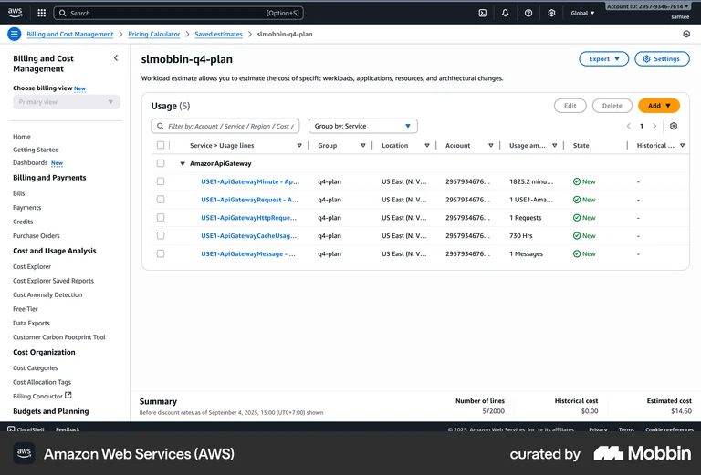
A total that never leaves the screen
The footer keeps Number of lines and Estimated cost visible without scrolling or selecting anything.
The State column has one value in practice, so it is decoration. Status earns its width only when states differ.
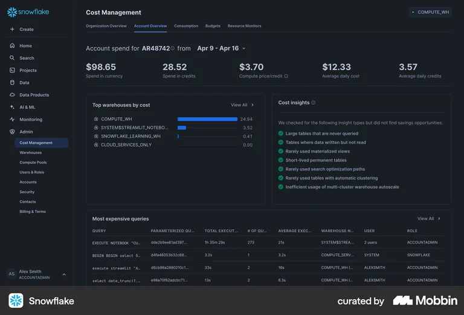
The best empty state in the set
It names every check it ran, ticks each one, and says it found nothing. Absence becomes evidence.
A dead end. No history, and no way to know when the checks themselves last changed.
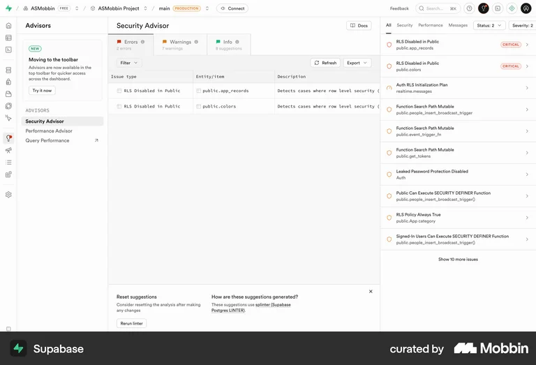
The closest thing anyone has to a ledger
Counts live in the tabs, the scan is re-runnable from the screen, and provenance is explained in place.
Every issue is anonymous — nothing assigned, nothing aged. A findings list, not a ledger.
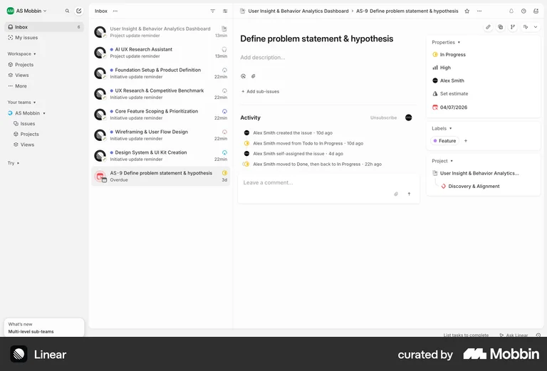
“Moved to Done, then back to In Progress”
The only reference that acknowledges finished work coming undone — in a single, economical line.
It is buried in an activity log on a detail page. The list view never says this issue bounced.
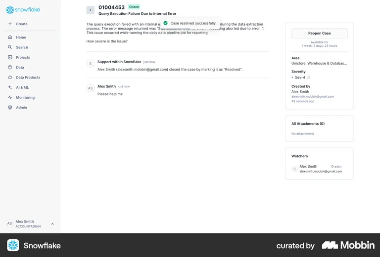
Reopening, but not forever
Closed, with Reopen Case available for “1 week, 2 days, 23 hours”. A bounded window to keep watching.
The countdown is arbitrary and unexplained. You cannot tell why that long, or what happens after.
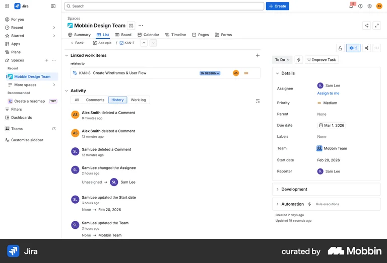
The audit trail Finout says is missing
Every field change logged with actor and relative time. Assignment changes are first-class events.
Undifferentiated — deleting a comment and reassigning ownership carry equal weight.
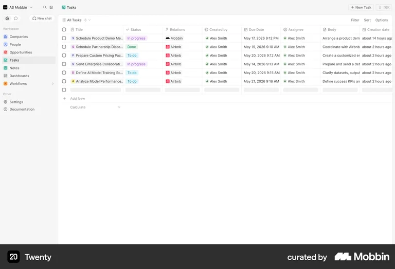
Age as a column, not a date
“About 2 hours ago” beats a timestamp when the failure mode is items going stale.
Status is bare text with no weight or colour, so scanning for state fails at real density.
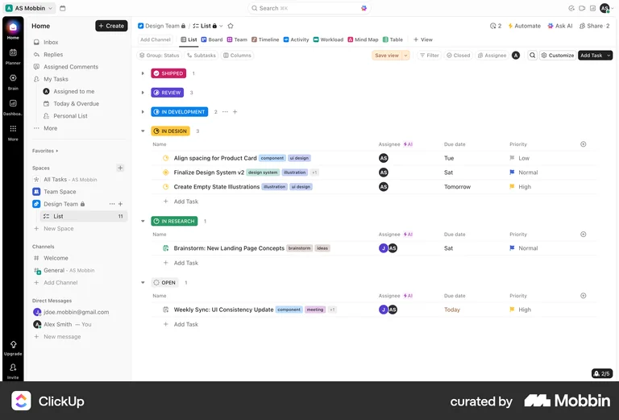
Grouping answers “what is stuck” first
Collapsible status groups with counts show the shape of the work before any filter is touched.
Six groups is too many, collapsed groups hide work, and the eye has no default resting place.
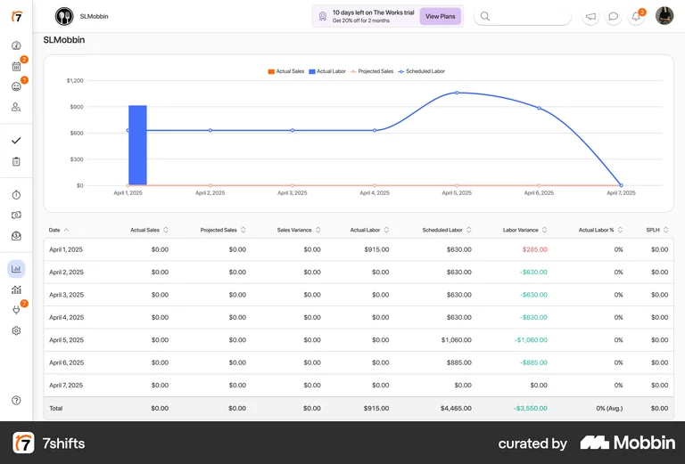
Variance as its own column
Actual, projected and variance sit adjacent with a total row. The reader never computes the delta.
Six near-identical numeric headers. Without colour it is unparseable — and colour alone is not accessible.
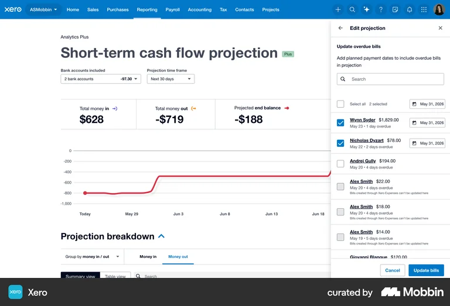
Selection and its action, together
Checkboxes, “2 selected”, per-row amounts and the primary action all live in one panel.
The count says how many, never how much. For money work the selected total governs the decision.
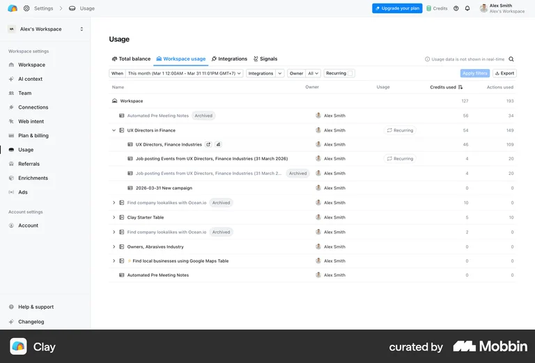
Owner as a column with a face
Ownership is a column with an avatar, not a filter, and Archived stays visible instead of vanishing.
Every owner in view is the same person, so the column carries no information.
Nothing scores above 3 on regression
| Reference | Status | Ownership | Evidence | Regression | Verdict |
|---|---|---|---|---|---|
| AWS · actions | 2 | 1 | 3 | 1 | Good placement, no accountability |
| AWS · summary row | 2 | 1 | 3 | 1 | Steal the persistent total |
| Snowflake · insights | — | 1 | 5 | 1 | Best empty state anywhere |
| Supabase · Advisor | 4 | 1 | 4 | 1 | Findings list, not a ledger |
| Linear · activity | 3 | 5 | 4 | 3 | Models regression — and hides it |
| Snowflake · reopen | 4 | 2 | 2 | 3 | Time-boxed reopen is a real idea |
| Jira · History | 2 | 5 | 5 | 2 | Audit trail, undifferentiated |
| Twenty · table | 2 | 4 | 2 | 1 | Relative age as a column |
| ClickUp · groups | 5 | 4 | 2 | 1 | Counts good, too many groups |
| 7shifts · variance | 3 | 1 | 5 | 1 | The projected-vs-actual model |
| Xero · bulk panel | 3 | 2 | 4 | 1 | Count without total |
| Clay · owner | 3 | 4 | 2 | 1 | Owner as a column with a face |
Table stakes, a real decision, and an opening
- Table stakes. Weighted status labels, a named owner with a face, counts in the tabs, relative age, a persistent total, provenance in place, and a re-runnable scan.
- The real decision. Group by status or filter by it — and is variance its own column, or a treatment inside one composite cell that can also say “Not verifiable”?
- Our opening. No reference surfaces work that was completed and then came undone. Linear buries it in a log; Snowflake hides it on a detail page.
Build a ledger, not a findings list — and make regression a first-class row state.
Wrong if FinOps leads never revisit closed items. Testable in one conversation: ask what they did the last time a saving came back, and whether they found out at all.